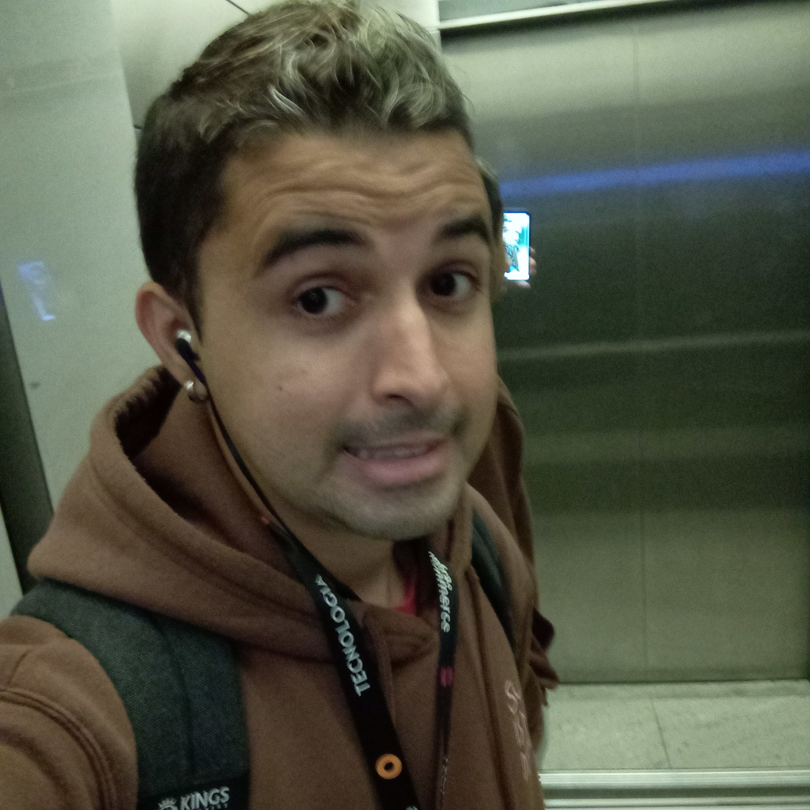

Esse sou Eu
Olá! Me chamo Iran, sou de São Paulo capital mais conhecida como Sampa, moro na região da Penha, tenho 28 anos, pós-graduado em Governança em TI e tecnólogo em Gestão da Tecnologia da Informação.
Gosto de ser um estudante nas horas vagas, sou apaixonado por uma boa música no momento certo, fã de cinema, gosto de passeios no shopping, acompanho diversos canais no YouTube e curto muito games.
Me considero um excelente support, sempre estou disposto a ajudar as pessoas e sou reconhecido por isso.